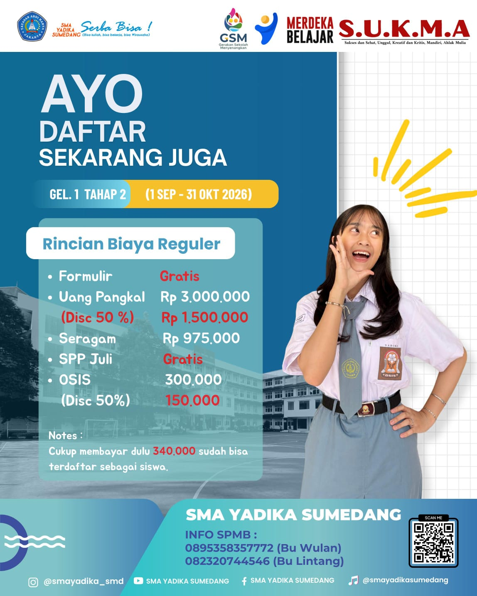
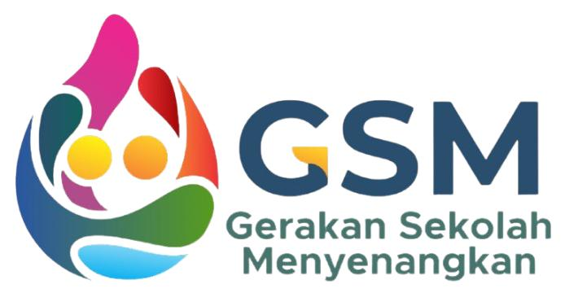
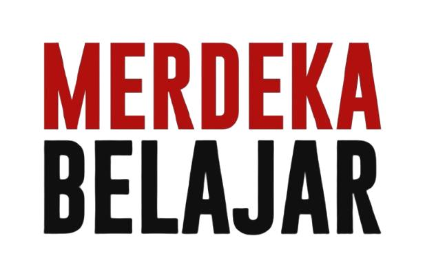
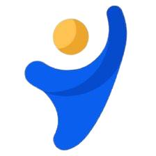
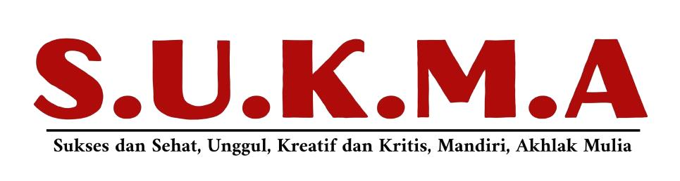
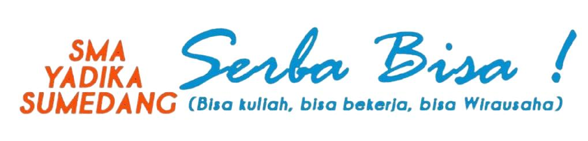

Berkarakter
Menumbuhkan sikap positif, tanggung jawab, kepedulian, dan akhlak mulia dalam keseharian.
Tempat tumbuhnya generasi yang berkarakter, kompeten, kreatif, dan siap melangkah menuju masa depan.
Berkarakter, Kompeten, dan Serba Bisa
SMA YADIKA SUMEDANG mendukung peserta didik untuk mengembangkan potensi akademik, keterampilan, dan karakter.
Menumbuhkan sikap positif, tanggung jawab, kepedulian, dan akhlak mulia dalam keseharian.
Mengembangkan pengetahuan, keterampilan, kreativitas, serta kemampuan berpikir kritis.
Mempersiapkan peserta didik untuk melanjutkan kuliah, bekerja, maupun berwirausaha.
Mendampingi peserta didik mengenali potensi dan merancang masa depan.
Website ini menjadi pusat informasi sekolah bagi peserta didik, orang tua, calon peserta didik, alumni, dan masyarakat. Informasi profil, program, pengumuman, serta agenda akan ditampilkan di sini.
Konten resmi seperti sejarah sekolah, visi-misi, fasilitas, program unggulan, dan struktur organisasi dapat ditambahkan setelah data final sekolah tersedia.
Tempat untuk membagikan informasi penting kepada warga sekolah dan masyarakat.
Ganti bagian ini dengan pengumuman resmi, misalnya informasi SPMB, asesmen, atau kegiatan sekolah.
Tambahkan ringkasan kegiatan sekolah dan tautan menuju dokumentasi atau berita lengkap.
Pastikan agenda yang tampil sudah dikonfirmasi oleh pihak sekolah.
Isi dengan nama kegiatan, tanggal, waktu, dan keterangan yang diperlukan.
Tambahkan jadwal akademik atau kegiatan siswa yang telah ditetapkan sekolah.
Informasi ini dirangkum dari brosur SMA YADIKA SUMEDANG yang diberikan pihak sekolah.
Informasi SPMB sesuai poster gelombang 1 tahap 2 yang diberikan sekolah.

Periode pada poster: 1 September – 31 Oktober 2026
Bu Wulan: 0895 3583 57772
Bu Lintang: 0823 2074 44546
Pastikan periode dan rincian biaya diperbarui jika ada perubahan resmi.
Periode gelombang umum ini tercantum pada brosur sekolah; cek pengumuman terbaru untuk tahun berjalan.
Jl. Raya Tanjungsari No. 394A, Gudang, Kecamatan Tanjungsari, Kabupaten Sumedang, Jawa Barat 45362.
Brosur sekolah menampilkan alumni yang melanjutkan pendidikan ke perguruan tinggi negeri dan kedinasan, serta berbagai prestasi siswa.
Alumni pada brosur tercatat melanjutkan ke berbagai institusi, antara lain Universitas Gadjah Mada, Universitas Padjadjaran, Universitas Airlangga, Universitas Pendidikan Indonesia, serta jalur Kepolisian Republik Indonesia dan Akademi Militer.
Bidang yang ditampilkan meliputi Kedokteran Gigi, Ilmu Hukum, Ilmu Sejarah, Administrasi Publik, Ilmu Kelautan, Bahasa Inggris, Sastra Indonesia, Biologi, dan bidang lainnya.
Dan masih banyak prestasi lainnya.
Informasi resmi sekolah dapat diperbarui melalui pengelola website.
Logo pendukung menggunakan gambar asli yang diberikan pihak sekolah.




Sukses dan Sehat, Unggul, Kreatif dan Kritis, Mandiri, Akhlak Mulia

Silakan kirim pertanyaan atau hubungkan tombol formulir dengan Google Forms resmi sekolah.
SMA YADIKA SUMEDANG
Website: smayadikasumedang.sch.id
Untuk menjaga keakuratan, alamat lengkap, email, telepon, dan tautan pendaftaran resmi perlu dimasukkan setelah dikonfirmasi.
Tautan Formulir Resmi (perlu diatur)